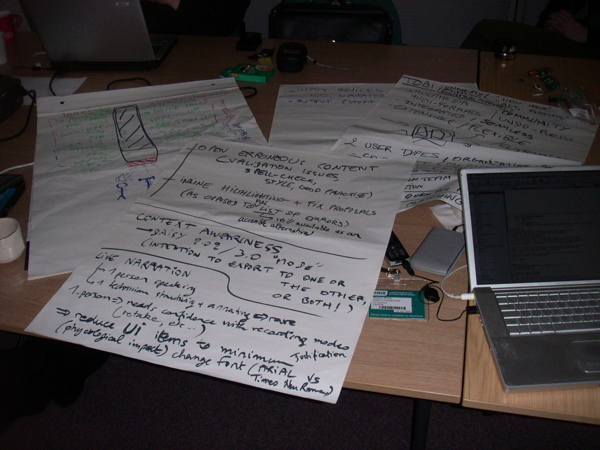

Note: this is the second face-to-face meeting at RNIB, for requirements gathering and mockup design.
Kindly hosted by RNIB, in Peterborough (UK).
This 2-day meeting is essentially an interactive brainstorming session. The format is the same as the previous meeting at RNIB.
This time however, we have reached (or are reaching) our first major milestone for year 2008. I suggest that we use this meeting as the official event to close this initial milestone.
We can look in retrospect at the work done and at the challenges encountered to make this cross-organization remote collaboration work, not only in terms of logistics but also in terms of creating momentum, keeping everyone interested, getting velocity in key areas, distributing action items, basically: using the human resources in the most effective way.
Second, we must define the key objectives for this second and final major iteration on the requirements gathering, mockup design and in addition: actual prototyping (real executable UI). By the summer, we need a complete product specification for Tobi and we can then close the inception period to enter design and implementation phase.
Reminder of the why this deliverable is important:
The focus will need to be on prioritization of the functional requirements inside the so-called "Product Backlog", which is a term for the entire application specification to be implemented (Scrum is the agile development process we are using to manage the Tobi software project, thus the specific terminology).
At implementation stage, this product configuration will incrementally be broken-down into successive 1-month development iterations (called "Sprints"), each of which will consist in realizing the so-called "Sprint Backlog". In other words, the Product Backlog is gradually "emptied" by translating requirements into concrete programming tasks for each iteration (Sprint Backlog).
To summarize, the prioritized items in the Product Backlog define the order of deliverables in the implementation process. Everyone must agree on what matters more in the early alpha and beta stages.
For your information, details of the process are available here.
Some notes here:
inception/requirements/UniqueSellingPoints
Flip-chart fun :)

NONE YET.